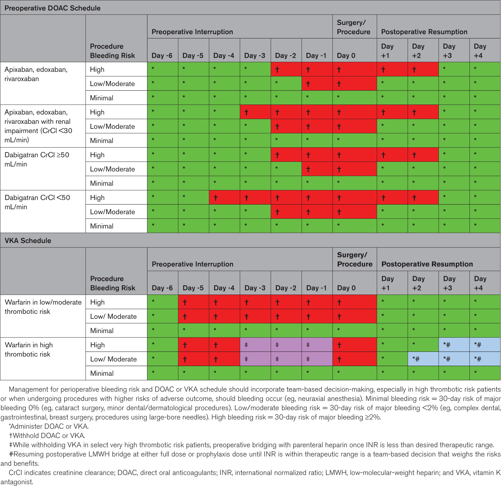

30-day MACE: 3.9%
| Score | Class | 30-day MACE |
|---|---|---|
| 0 | I | 3.9% |
| 1 | II | 6.0% |
| 2 | III | 10.1% |
| ≥3 | IV | 15%+ |
Lee TH et al. Circulation 1999;100:1043. Risk % per Davis 2013.
30-day CV events: ~1%
| Score | Risk | 30-day CV |
|---|---|---|
| 0-1 | Low | ~1% |
| 2-3 | Intermediate | ~5-10% |
| ≥4 | High | ~15%+ |
Dakik HA et al. JAHA 2019;8:e016228.
2024 AHA/ACC Class 2a — preferred over subjective METs
≈ 2.7 METs (VO₂peak 9.6)
| DASI | Capacity | Implication |
|---|---|---|
| <25 | Poor | Consider further evaluation |
| 25–34 | Borderline | Context-dependent |
| >34 | Adequate | Low risk — proceed |
Subjective METs did NOT predict 30-day MI/death (METS Lancet 2018)
METS trial (n=1,401): physician-estimated METs did not predict 30-day MI/death. DASI did (OR 0.96/unit). Use DASI for documentation.
NT-proBNP Class 2a, hs-troponin Class 2b (2024 AHA/ACC)
Enter values
Fleisher LA et al. Circulation 2024;150:e351
Select details above.

Fleisher LA et al. Circulation 2024;150:e351. Table 13: Stepwise approach to perioperative cardiac assessment.
Perioperative cardiovascular risk stratification for inpatient preoperative consultation. Generates copy-paste A&P for EMR.
2024 AHA/ACC Guideline for Perioperative Cardiovascular Management for Noncardiac Surgery (Circulation 2024;150:e351)
100% client-side. No data transmitted, stored, or logged. No analytics or cookies.
Sumer Moussa, MD — Cardiovascular Disease Fellow